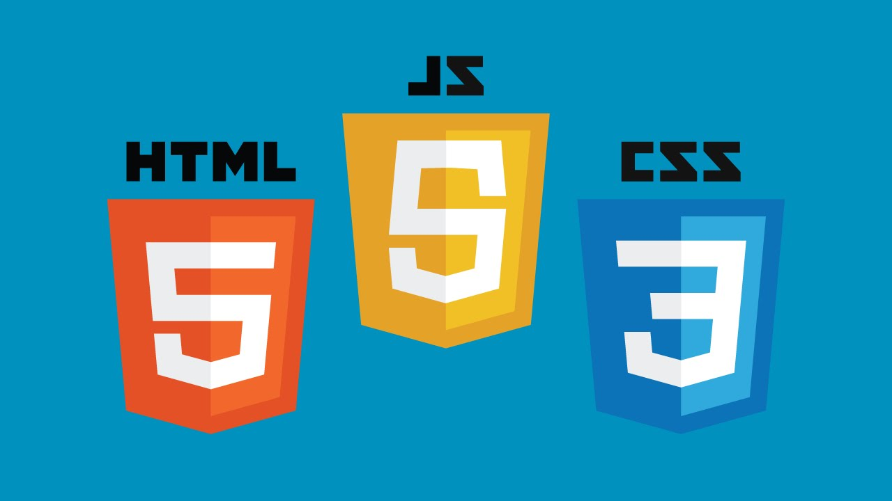

Talyson André Alves
Cidade: Tucuruí
Telefone: (94) 991652047
Email: talysonoficial12@gmail.com
Objetivo
Se tornar um programador Full Stack, iniciando carreira como Web desenvolvedor font-end iniciante.
Formação
Ensino médio
Cursando 3° ano no Instituto Federal de Ciências e Tecnologias do Estado do Pará, curso de Manutenção e suporte técnico em informática integrado.
Experiência

Web desenvolvedor iniciante, mas com conhecimentos sólidos em HTML5, CSS3 e JavaScript, bem como os frameworks React e Angular.
 Trabalhou no Facebook como WebDesigner entre 2018-2020
Trabalhou no Facebook como WebDesigner entre 2018-2020
Principais contribuintes para o meu desenvolvimento na área Web
Gustavo Guanabara, do canal Curso em Vídeo
Habilidades
- HTML5
- CSS3
- JavaScript
- Python (básico-intermediário)